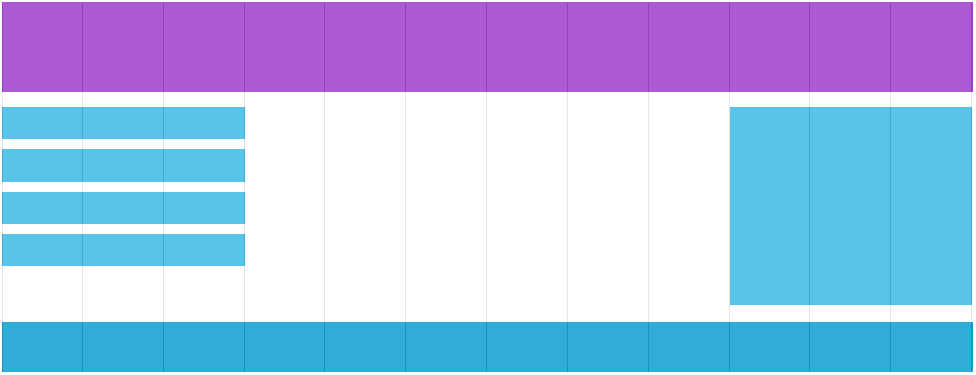

CSS Responsive
Introduction
What is Responsive Web Design?
Responsive web design makes your web page look good on all devices.
Responsive web design uses only HTML and CSS.
Responsive web design is not a program or a JavaScript.
Designing For The Best Experience For All Users
Web pages can be viewed using many different devices: desktops, tablets, and phones. Your web page should look good, and be easy to use, regardless of the device.
Web pages should not leave out information to fit smaller devices, but rather adapt its content to fit any device:

It is called responsive web design when you use CSS and HTML to resize, hide, shrink, enlarge, or move the content to make it look good on any screen.
Grid-View
What is a Grid-View?
Many web pages are based on a grid-view, which means that the page is divided into columns:
Using a grid-view is very helpful when designing web pages. It makes it easier to place elements on the page.
A responsive grid-view often has 12 columns, and has a total width of 100%, and will shrink and expand as you resize the browser window.
Building a Responsive Grid-View
Lets start building a responsive grid-view.
First ensure that all HTML elements have the box-sizing property set to border-box. This makes sure that the padding and border are included in the total width and height of the elements.
Add the following code in your CSS:
*{
box-sizing : border-box;
}
The following example shows a simple responsive web page, with two columns:
Example:
.menu{
width : 25%;
float : left;
}
.main{
width : 75%;
float : left;
}
Media Queries
What is a Media Query?
Media query is a CSS technique introduced in CSS3.
It uses the @media rule to include a block of CSS properties only if a certain condition is true.
Example
If the browser window is 600px or smaller, the background color will be lightblue:
@media only screen and (max-width: 600px){
body{
background-color : lightblue;
}
}
Add a Breakpoint
Earlier in this tutorial we made a web page with rows and columns, and it was responsive, but it did not look good on a small screen.
Media queries can help with that. We can add a breakpoint where certain parts of the design will behave differently on each side of the breakpoint.
Use a media query to add a breakpoint at 768px:
/* For desktop: */
.col-1 {width : 8.33%;}
.col-2 {width : 16.66%;}
.col-3 {width : 25%;}
.col-4 {width : 33.33%;}
.col-5 {width : 41.66%;}
.col-6 {width : 50%;}
.col-7 {width : 58.33%;}
.col-8 {width : 66.66%;}
.col-9 {width : 75%;}
.col-10 {width : 83.33%;}
.col-11 {width : 91.66%;}
.col-12 {width : 100%;}
/* For mobile phones: */
@media only screen and (max-width: 768px){
[class*="col-"]{
width : 100%;
}
}
Always Design for Mobile First
Mobile First means designing for mobile before designing for desktop or any other device (This will make the page display faster on smaller devices).
This means that we must make some changes in our CSS.
Instead of changing styles when the width gets smaller than 768px, we should change the design when the width gets larger than 768px. This will make our design Mobile First:
/* For mobile phones: */
[class*="col-"]{
width : 100%;
}
@media only screen and (min-width: 768px){
/* For desktop: */
.col-1 {width : 8.33%;}
.col-2 {width : 16.66%;}
.col-3 {width : 25%;}
.col-4 {width : 33.33%;}
.col-5 {width : 41.66%;}
.col-6 {width : 50%;}
.col-7 {width : 58.33%;}
.col-8 {width : 66.66%;}
.col-9 {width : 75%;}
.col-10 {width : 83.33%;}
.col-11 {width : 91.66%;}
.col-12 {width : 100%;}
}
Another Breakpoint
You can add as many breakpoints as you like.
We will also insert a breakpoint between tablets and mobile phones.
We do this by adding one more media query (at 600px), and a set of new classes for devices larger than 600px (but smaller than 768px):
/* For mobile phones: */
[class*="col-"]{
width : 100%;
}
@media only screen and (min-width: 600px){
/* For desktop: */
.col-s-1 {width : 8.33%;}
.col-s-2 {width : 16.66%;}
.col-s-3 {width : 25%;}
.col-s-4 {width : 33.33%;}
.col-s-5 {width : 41.66%;}
.col-s-6 {width : 50%;}
.col-s-7 {width : 58.33%;}
.col-s-8 {width : 66.66%;}
.col-s-9 {width : 75%;}
.col-s-10 {width : 83.33%;}
.col-s-11 {width : 91.66%;}
.col-s-12 {width : 100%;}
}
@media only screen and (min-width: 768px){
/* For desktop: */
.col-1 {width : 8.33%;}
.col-2 {width : 16.66%;}
.col-3 {width : 25%;}
.col-4 {width : 33.33%;}
.col-5 {width : 41.66%;}
.col-6 {width : 50%;}
.col-7 {width : 58.33%;}
.col-8 {width : 66.66%;}
.col-9 {width : 75%;}
.col-10 {width : 83.33%;}
.col-11 {width : 91.66%;}
.col-12 {width : 100%;}
}
It might seem odd that we have two sets of identical classes, but it gives us the opportunity in HTML, to decide what will happen with the columns at each breakpoint:
HTML Example
For desktop:
The first and the third section will both span 3 columns each. The middle section will span 6 columns.
For tablets:
The first section will span 3 columns, the second will span 9, and the third section will be displayed below the first two sections, and it will span 12 columns:
<div class="row">
<div class="col-3 col-s-3">...</div>
<div class="col-6 col-s-9">...</div>
<div class="col-3 col-s-12">...</div>
</div>
Typical Device Breakpoints
There are tons of screens and devices with different heights and widths, so it is hard to create an exact breakpoint for each device. To keep things simple you could target five groups:
/* Extra small devices (phones, 600px and down) */
@media only screen and (max-width: 600px) {...}
/* Small devices (portrait tablets and large phones, 600px and up) */
@media only screen and (min-width: 600px) {...}
/* Medium devices (landscape tablets, 768px and up) */
@media only screen and (min-width: 768px) {...}
/* Large devices (laptops/desktops, 992px and up) */
@media only screen and (min-width: 992px) {...}
/* Extra large devices (large laptops and desktops, 1200px and up) */
@media only screen and (min-width: 1200px) {...}
Orientation: Portrait / Landscape
Media queries can also be used to change layout of a page depending on the orientation of the browser.
You can have a set of CSS properties that will only apply when the browser window is wider than its height, a so called "Landscape" orientation:
Example
The web page will have a lightblue background if the orientation is in landscape mode:
@media only screen and (max-width: 600px) {
body{
background-color : lightblue;
}
}
Hide Elements With Media Queries
Another common use of media queries, is to hide elements on different screen sizes:
I will be hidden on small screens.
/* If the screen size is 600px wide or less, hide the element */
@media only screen and (max-width: 600px) {
div.exampl{
display : none;
}
}